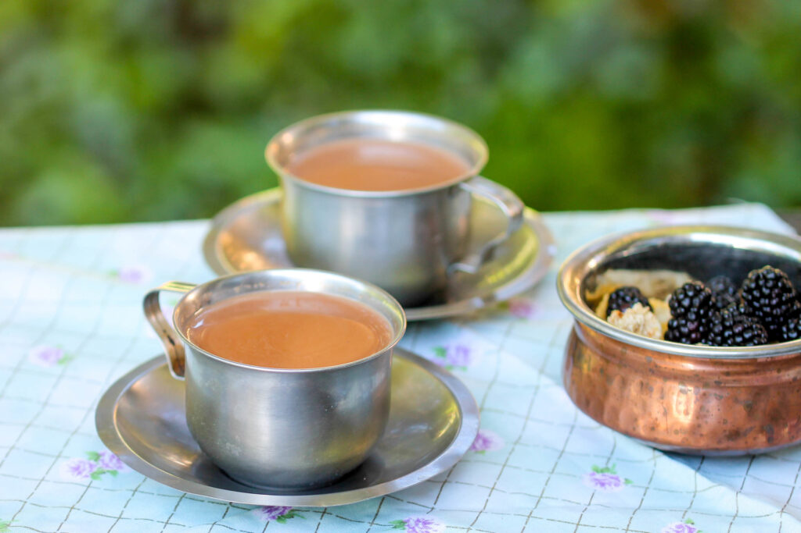

Nepali Chiya
Home

Description
Ingredients
- Water: 2 cups
- Ginger, sliced or crushed: 1 piece
- Tea (CTC): 2-3 tsp
- Green cardamom: 4-6 pods
- Milk of choice: 1 cup
- Sugar: 2 tsp
Instructions
- In a medium saucepan, bring water to a boil with spices and simmer for 2-3 minutes.
- Add tea leaves to the pot and boil for 1-2 minutes until the color changes to red/brown.
- Add milk and sugar, then bring it to a boil, lower the heat and boil for additional minute. Adjust any more milk or sugar to taste and serve it hot.